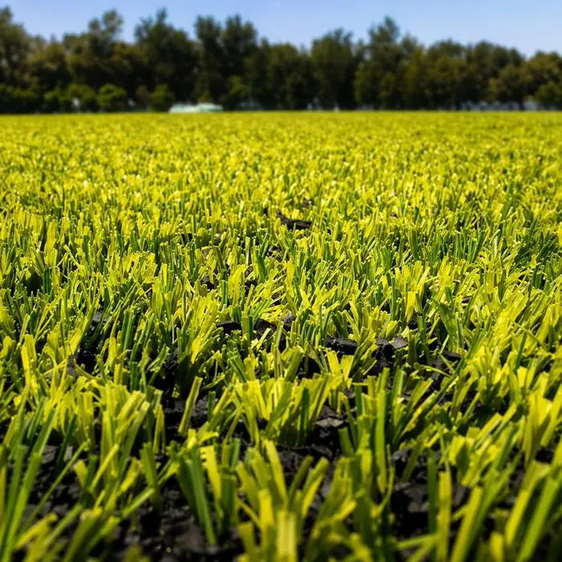

Tipo de fibra
Monofilamento, fibrilado o híbrido cambian costo, apariencia, resistencia y recomendación por deporte.
Guía actualizada · Junio 2026 · Cobertura nacional México
El precio por m² depende del tipo de pasto, altura, densidad, deporte, medidas, líneas, rellenos, ciudad y alcance de instalación. Te ayudamos a cotizar con claridad en México.

El precio por m² cambia según el tipo de pasto, la altura, los rellenos, las líneas y la instalación. Aquí te explicamos cada factor para que cotices con claridad.
Monofilamento, fibrilado o híbrido cambian costo, apariencia, resistencia y recomendación por deporte.
La altura, peso de fibra y densidad influyen en desempeño, durabilidad y precio final.
Pegado, uniones, trazos, líneas y cepillado impactan la calidad de entrega.
Los rellenos deportivos afectan sensación de juego, estabilidad y volumen de material.
No cuesta igual una cancha futbol 5 que futbol 7, rápido o soccer.
La ubicación ayuda a calcular tiempos, traslado y alcance final de cotización.
El costo real se entiende mejor cuando se ve el sistema instalado: textura, líneas, rellenos y cancha lista para jugar.


El precio cambia según la especificación. Cotizamos por medidas reales y alcance: material, instalación, líneas y rellenos.
Los rangos son orientativos. La cotización formal depende de medidas, tipo de pasto, altura, densidad, rellenos, líneas, ciudad y alcance contratado.
Pon el largo y ancho de tu cancha y te damos un rango estimado del pasto sintético instalado (sin base ni extras).
Para comparar bien, no basta ver precio de rollo. Conviene revisar qué incluye el sistema instalado.
Con medidas y fotos podemos darte una cotización mucho más útil que un precio genérico.
Nos dices largo, ancho y ciudad.
Definimos futbol 5, 7, rápido, soccer o escolar.
Recomendamos tipo de pasto, líneas y rellenos.
Enviamos precio según alcance por WhatsApp.
El pasto sintético deportivo puede contar con 9 años de garantía contra decoloración por rayos UV del pasto sintético, más garantía de instalación según alcance contratado.



Proyectos de pasto sintético deportivo entregados en México.
Envíanos medidas, ciudad, tipo de cancha y si buscas solo material o instalación completa. Te respondemos por WhatsApp con una cotización clara.
Depende del tipo de pasto, altura, densidad, rellenos, líneas, instalación, ciudad y medidas. Lo correcto es cotizar por proyecto.
Puede incluir solo material o sistema instalado. En Sportmaster podemos cotizar suministro o venta e instalación completa.
Influyen tipo de fibra, altura, densidad, rellenos, líneas deportivas, superficie total y alcance contratado.
Suele evaluarse monofilamento o híbrido de 40 a 45 mm según uso, apariencia deseada y presupuesto.
Puede incluir pasto, líneas, arena sílica, caucho, adhesivos, uniones, instalación profesional, cepillado final y garantía.
El pasto puede contar con 9 años de garantía contra decoloración por rayos UV del pasto sintético, según sistema contratado.
Sí. Cotizamos pasto sintético para canchas de futbol en México.
Medidas de la cancha, ciudad, tipo de deporte, fotos del área y si necesitas material o instalación completa.
El pasto sintético deportivo está hecho para uso intensivo y cuenta con garantía de 9 años contra decoloración por rayos UV. Su vida útil depende del uso, el mantenimiento y la calidad del sistema instalado.
Mantenimiento sencillo: cepillado periódico para mantener la fibra erguida, redistribución de rellenos y limpieza de residuos. No requiere riego, poda ni resiembra como el pasto natural.
Los rangos de precio por m² son orientativos. El IVA, el flete y los viáticos se definen en la cotización formal según la ciudad y el alcance del proyecto.
El pasto sintético no necesita riego, poda ni resiembra, soporta uso intensivo y se ve igual todo el año; el natural cuesta menos por m² al inicio pero implica mantenimiento constante. Por eso la mayoría de las canchas de renta eligen sintético.